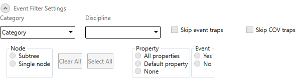

Set Event Filters
In this procedure you will specify for which categories and disciplines the events will be exposed to third-party systems.
- In the Event Filter Settings expander, do one or more of the following:
- To include all the event categories, open the Category drop-down list, and then select the Categories check box.
- To restrict the event categories, expand Categories in the Category drop-down list, and then select the check boxes that correspond to the categories you want to include.
- To include all the event disciplines, open the Discipline drop-down list, and then select the Disciplines check box.
- To restrict the event disciplines, expand Disciplines in the Discipline drop-down list and select the check boxes that correspond to the disciplines you want to include.
- To disable the SNMP Agent capability to receive event traps, select the check box Skip event traps.
- To disable the SNMP Agent capability to receive COV traps, select the check box Skip COV traps.
